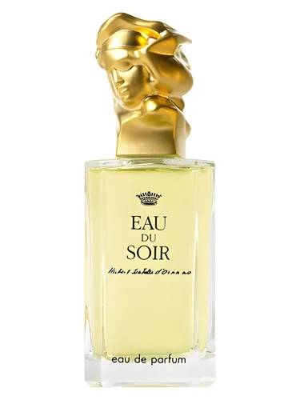

Eau du Soir
- Para mujer
- Familia amaderada
- Lanzado en 1990
$2,599
Precio de referencia. Te confirmamos el precio final y la presentación por WhatsApp antes de enviar.
Por encargo: lo conseguimos para ti
Cómo huele
Amaderado
Especiado fresco
Aromático
Terroso
Musgoso
Sus notas
Salida
toronjanaranja mandarina
Corazón
musgo de robleenebropachulípimientairisclavelsiringarosalabdano francésjazmínlirio de los vallesylang-ylang
Fondo
almizcleámbar
Eau du Soir de Sisley es un perfume amaderado para mujer, lanzado en 1990. Abre con toronja y naranja mandarina, en el corazón tiene musgo de roble y enebro y deja un fondo de almizcle y ámbar. Lo que más se siente: amaderado, especiado fresco y aromático.